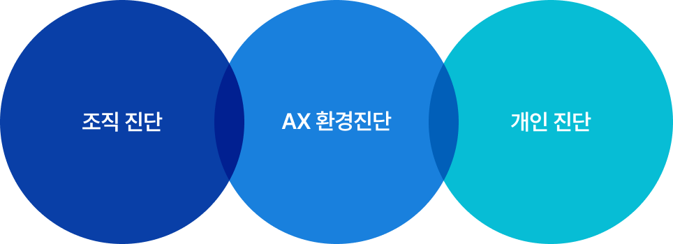

AXPERT LAB의
AI Master Roadmap

AI 교육
AX 조직문화 & 팀빌딩
AI 직무 특화 교육
AI 스킬 특화 교육
AX 컨설팅 솔루션,
MTD(Mission Task Driven)
MTD 5단계 프로세스
1
Mission Definition
무엇을 바꾸려 하는가?
교육컨설턴트와 AI 전문가가 함께 변화가 필요한 핵심 영역을 확인합니다.
담당자/경영진 인터뷰
AX 성숙도 진단
2
Task Insight
문제는 어디서 발생하는가?
AX전환을 위한 조직환경 (업무흐름, 실제 데이터, 의사결정, 협업구조 등) 조사를 통해 문제를 도출합니다.
팀별 업무 프로세스 병목 진단,
직무별 Pain Point List
3
Solution Design
문제를 해결하는 솔루션 설계
Mission Task Driven 기반 맞춤형 교육 설계와 함께 팀별/직무별 AI직 용 과제를 구체화합니다.
프로젝트 기반 교육설계,
Job-based AI Kit
4
Work Application
교육을 현업에 적용
교육프로그램과 실무과제를 활용하여 각 분야의 전문가와 함께 솔루션을 적용합니다.
AI 교육/실습, 적용 미션 수행,
Best Practice 도출
5
Change Scale-Up
조직 변화로 확장
교육에서 끝나는 것이 아닌 실제 기업의 AX전환을 위한 다음 단계의 도전을 함께 고민하고 실행합니다.
AI 챔피언 육성/BP사례 확산,
PoC 파일럿 프로젝트
AI 진단 솔루션, MTD 진단
데이터 기반의 체계적인 교육 매칭
및 맞춤형 솔루션 설계
MTD 진단은 단순히 개인 스킬/역량 진단 차원을 넘어서
그 조직에 맞는 AX 솔루션을 도출하기 위한 도구입니다.
3차원의 MTD 진단


데이터 기반의 체계적인
AX 전략 및 AI 교육 매칭
1
조직의 AI에 대한
조직의 AI에 대한
입장 및 준비도 확인
(전략, 일하는 방식, AX 환경 등)
2
팀/개인 단위의
팀/개인 단위의
AI 활용 정도 및
교육에 대한 니즈 확인
3
진단 레포트 제공
(현재 상황 및 보완이 필요한 점,
GAP 분석 결과 등)
4
AX 전략 및
AX 전략 및
교육 솔루션 연동
사전-사후 진단 결과를 통한 교육 효과성 검증 및
차기 교육 프로그램 추천
강사진
AXPERT LAB
AXPERT LAB은 단순한 스킬 전달이 아닌
일하는 방식의 변화를 위한 실제적인
AX 교육 솔루션 제공
AI 역량 강화팀
- AI 트렌드 및 업무 적용 연구
- 교육 프로그램·도구 개발
AI 강의 & 운영팀
- AI 이해도가 높은 전문 강사진
- AI 교육 운영 경험이 풍부한 전문 운영진
AX 혁신 지원팀
- AX 기술 자문 및 컨설팅
- AI 교육 운영 지원


AI 교육 기획 및 개발
(기업/공공)- AI를 활용한 업무역량 향상 프로그램 개발
AI 제도 및 정책 연구
(공공)- AI 관련 정부정책 연구
- AI 역량 강화 사업 운영
강의 및 교육 운영
- AI 전문 강사로 구성된 강사풀 활용
컨설팅
(진단/평가)- AI 성숙도 진단
- AX 교육로드맵 설계
AI 기술 지원
- AI 교육 기술 자문
- 기술 PoC 프로젝트 지원
Newsletter
AXPERT Lab의 최신 AX 솔루션을 안내해 드립니다.